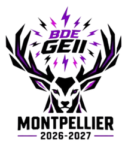

Membre du Bureau des étudiants de la formation en tant que trésorier.

Encadrement d'enfants de 8 à 11 ans — animation et travail d'équipe.
Garde d'enfants de 4 à 8 ans en journée.
En recherche d'une alternance dès l'automne 2027, et d'un stage de 2 à 3 mois à partir de mai 2027. N'hésitez pas à me contacter.
07 84 24 44 99